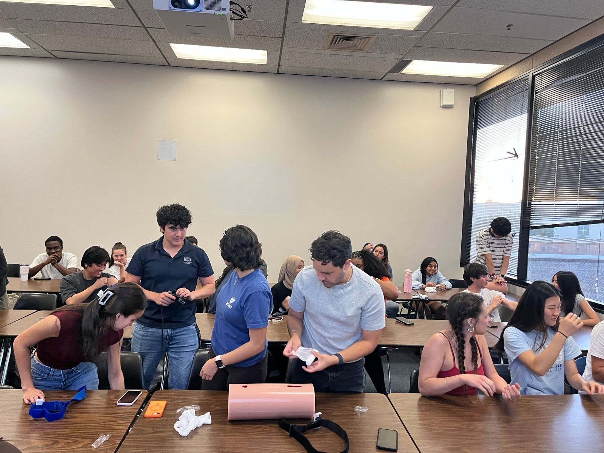
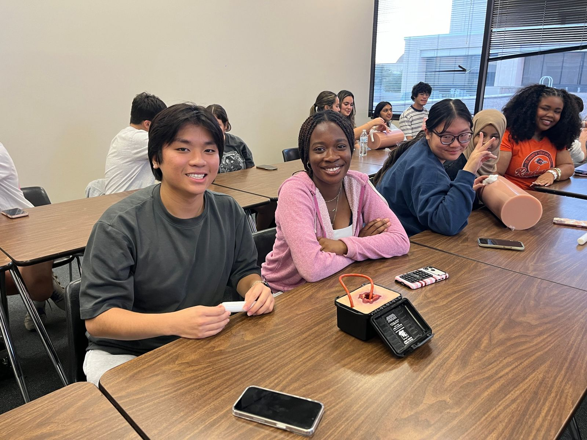
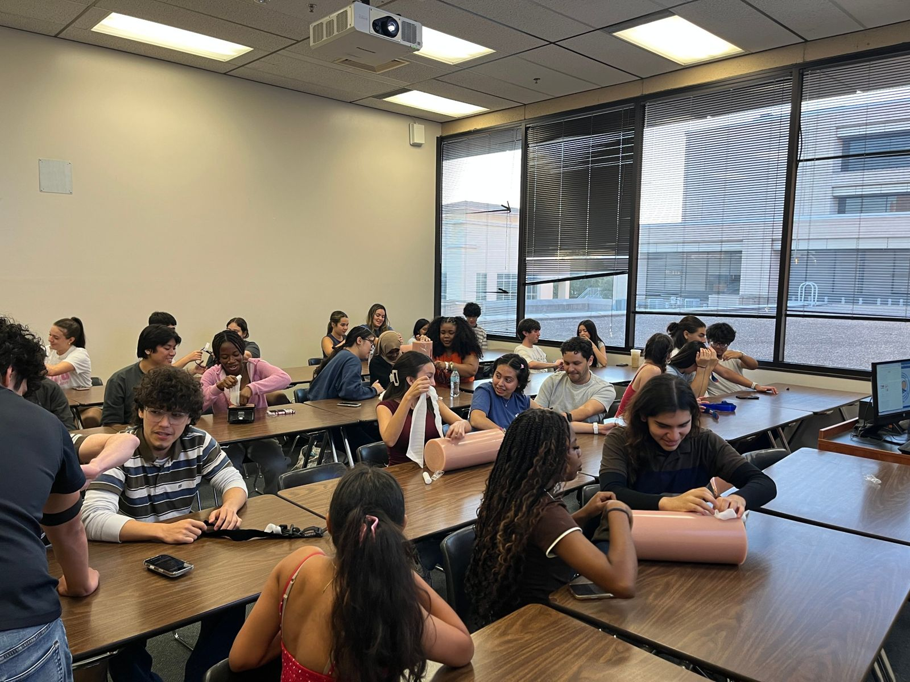
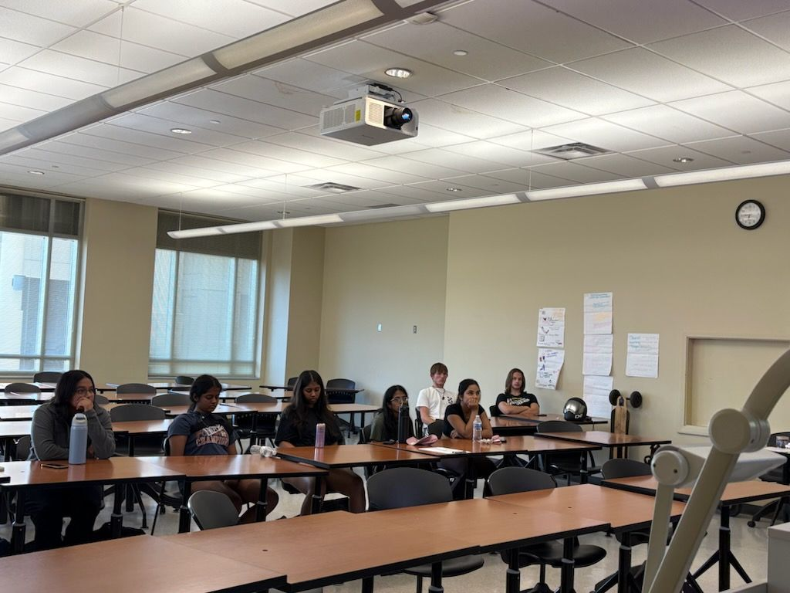
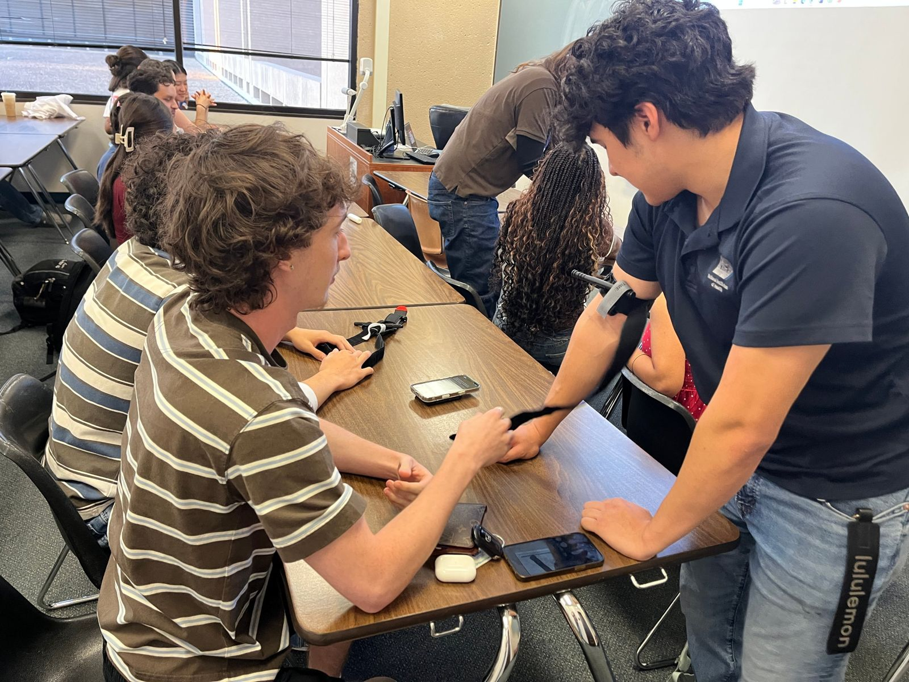
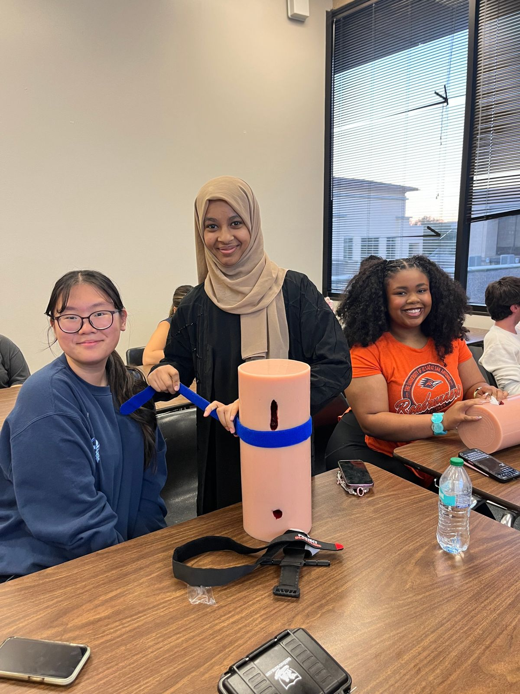
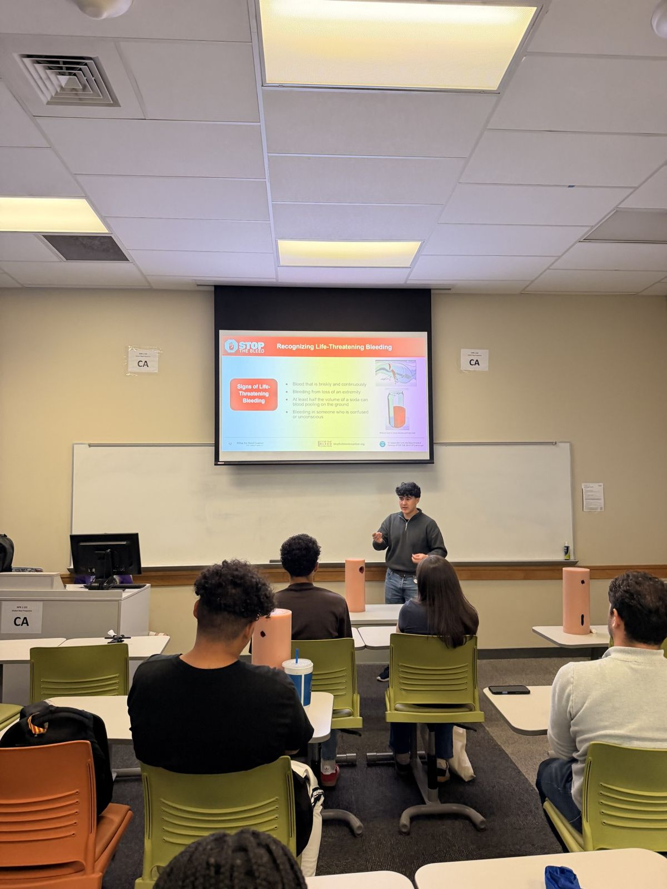

Impacto
Más de 175 personas certificadas desde septiembre de 2025, la mayoría estudiantes de UTSA. Esto es lo que cambió para ellas.
Antes y después de una clase
A quién hemos capacitado
nunca había tomado un curso de STOP THE BLEED®
no tenía ni idea de dónde están los botiquines para control de sangrado en el campus de UTSA
tenía entre 18 y 24 años
exparticipantes regresaron a asistir o enseñar
Después de la clase
dijo que entendió claramente al instructor y el material
planea compartir lo que aprendió con familia, amigos o compañeros de trabajo
siente que podría enseñarle a alguien más lo que aprendió
Estos tres vienen de la encuesta posterior que usamos de septiembre de 2025 a marzo de 2026 (67 respuestas).
Lo que más les ayudó, en sus palabras
"Aprender cómo funciona el quick clot."
"Saber la mejor forma de aplicar presión o gasa en una herida."
"La práctica y la información sobre cómo identificar un sangrado peligroso."
"Ayudó mucho que mostrara visualmente cómo hacer cada paso."
"El paso a paso de cómo poner un torniquete."
"Lo que más me ayudó fue aprender a rellenar una herida."
Respuestas traducidas del inglés.







